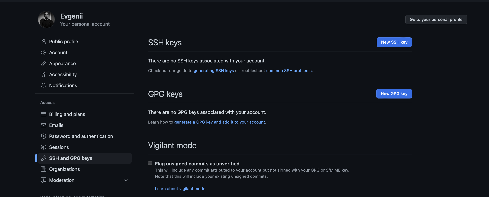

Как подключиться к Github?
Github - это обычный сайт, где каждый может загрузить туда cвой код или скачать его оттуда. Есть репозитории (на "земном" папки ), в которых и хранится вся информация. Ниже инструкция, как работать с github.
С гитом можно работать, как через Terminal, так и через VSCode или другую IDE (последнее проще).
Работа через Terminal (Mac) или PowerShell (Win):
Сначала подключимся к Github через terminal. Для этого нам нужно создать ключ (ссылку), который свяжет наш компьютер с Github. Заходим в terminal или командную строку. Пишем:
Создаем ssh-keygen
ssh-keygen - Нажимаем везде Enter. В моем случае пришлось еще нажать y в Overwrite (y/n)? и пересоздать ключ, так как он у меня уже был
(base) halltape@Evgeniis-MacBook-Pro ~ % ssh-keygen
Generating public/private rsa key pair.
Enter file in which to save the key (/Users/halltape/.ssh/id_rsa):
/Users/halltape/.ssh/id_rsa already exists.
Overwrite (y/n)? y
Enter passphrase (empty for no passphrase):
Enter same passphrase again:
Your identification has been saved in /Users/halltape/.ssh/id_rsa
Your public key has been saved in /Users/halltape/.ssh/id_rsa.pub
The key fingerprint is:
SHA256:vBzK7g4/3zcA3wUb9HLpoaCHLudJ1qsaXg12J9bchaI halltape@Evgeniis-MacBook-Pro.local
The key's randomart image is:
+---[RSA 3072]----+
| .. |
| o. o |
| . o+* .|
| ..o =.B.o |
| SoE.=.o |
| . = Xoo. |
| . = O o. |
| =.O o .o |
| oB+=.o. . |
+----[SHA256]-----+
Дальше нам нужно открыть файл, где создался этот ключ (просто шифр из многобукв). Username у вас свой!
Показать ssh-keygen
cat /Users/username/.ssh/id_rsa.pub - Копируем все, начиная от ssh-rsa до local
(base) halltape@Evgeniis-MacBook-Pro ~ % cat /Users/halltape/.ssh/id_rsa.pub
ssh-rsa AAAAB3NzaC1yc2EAAAADAQABAAABgQDRQ
KSox2pVCd/TOrSPGojUoIqL2flV0vII6seQ1xC3T
eokWlpYRbvPFS9KsSW+mEmsALWlmhNfaFBRfRsifgjCt
rFBHWwwYkeWJiOmo9fxpCBf7wi4reg8458634hjge804
NOvUQ11XXGBlw2nA4Vgal1adGgMXptQQzQ4taq3pHTBNoFFARLSA
/vNkgXtfnXvBGlDj3YQNVbM8IViWkwR
rtKLjvVVVUpXct3TSFpK1eGGxGB/b1KDV+HeCOOKPi9j8=hallta
pe@Evgeniis-MacBook-Pro.local
(base) halltape@Evgeniis-MacBook-Pro ~ %
Подключим свой Github с помощью SSH
Заходим в настройки SSH and GPG keys. Нажимаем New SSH key

Вставляем скопированный ssh-keygen

Супер! Теперь мы можем скачивать все, что угодно с GitHub!
Но прежде, чем скачать репозиторий к себе на ПК, следует сделать его копию у себя на Github. Это будет лично ваша копия, с которой вы можете делать все что угодно (изменять, удалять, добавлять и т.д.)
В terminal (командная строка) заходим в папку, куда мы хотим скачать наш репозиторий
Команда pwd покажет место, где мы находимся
pwd
(base) halltape@Evgeniis-MacBook-Pro Desktop % pwd
/Users/halltape/Desktop
Посмотреть содержимое папки
ls ```bash(base) halltape@Evgeniis-MacBook-Pro ~ % ls Applications Downloads Public Creative Cloud Files Library PycharmProjects DataGripProjects Movies miniconda3 Desktop Music mysql Documents Pictures
**Зайдите в место, куда вам будет удобно скачать репозиторий
Команда *cd* переместит вас в папку**
*Допустим мы здесь Users/halltape/Desktop*
> cd ..
>
> cd Downloads
- В первом случае мы перемещаемся на папку выше, в папку **halltape**
- Во втором случае мы перемещаемся в папку **Downloads** (можно писать любую папку в рамках тех папок, которые есть)
**Установка Git**
Чтобы работать с Git, нужно его установить [вот так на Mac](https://git-scm.com/downloads/mac) или [вот так на Win](https://git-scm.com/downloads/win)
>git нужен, чтобы вы могли скачивать и загружать свой код со своего компьютера на GitHub и обратно, а также отслеживать версии кода, но об этом чуть позже.
>
***
**А теперь зайдите [сюда](https://github.com/halltape/HalltapeRoadmapDE).**
Этот репозиторий вы должны будете скачать к себе на ПК по инструкции ниже.
**Копируем ссылку на репозиторий**

**Команда ниже начнет скачивание репозитория с github в то место,
где вы находитесь, согласно terminal.**
**Скачать репозиторий к себе на ПК**
> git clone ```git@github.com:halltape/data-engineering.git```
- Мы скачали репозиторий к себе на ПК. Теперь у нас есть копия этой папки на компьютере. Мы можем вносить любые изменения (удалять, добавлять или править файлы в этом репозитории). Например, мы сделали домашнее задание и хотим загрузить его обратно в свой **github**. Но нам **НЕ НУЖНО** снова грузить **ЦЕЛЫЙ РЕПОЗИТОРИЙ** обратно. Нам достаточно обновить одну или несколько папок (файлов).
- Для этого есть 4 команды: **git status, git add, git commit, git push**
**Посмотреть список новых или обновленных файлов на нашем ПК**
> git status
- Нам покажут все новые или обновленные файлы и папки, которые появились на нашем компьютере в скачанном репозитории. Он как бы отслеживает изменения.
**Например я внес изменения и добавил файл HALLTAPE.txt**
> git status
- Как видно, terminal сразу показал, что есть **modified: HALLTAPE.txt**
```bash
(base) halltape@Evgeniis-MacBook-Pro data-engineering % git status
On branch develop
Your branch is up to date with 'origin/develop'.
Changes not staged for commit:
(use "git add <file>..." to update what will be committed)
(use "git restore <file>..." to discard changes in working directory)
'modified: HALLTAPE.txt'
no changes added to commit (use "git add" and/or "git commit -a")
(base) halltape@Evgeniis-MacBook-Pro data-engineering %
Добавить в список на загрузку файлы, которые нам показали при git status
git add .
git add HALLTAPE.txt
- git add . - Точка здесь обязательна! Добавь все, что появилось новенького и удали то, что было удалено. Грубо говоря, мы соглашаемся со ВСЕМИ изминениями в репозитории.
- git add HALLTAPE.txt - Добавь только файл HALLTAPE.txt (можно написать название файлов через пробел. Тогда добавятся несколько)
Команда добавляет комментарий к загрузке.
git commit -m 'homework_01'
- Комментарий будет отображаться на github, когда мы все загрузим. Можно писать что угодно 'yo_iam_rapper'. Это удобно для вас, чтобы вы понимали, что вы там меняли например.
НЕ ГРУЗИ НА ВЕТКУ MASTER!
git checkout -b develop
git switch develop - Создай ветку develop. И далее переключись на нее. На ветке master должен храниться исходник. Сейчас это не так важно, но лучше привыкнуть к этому сразу
(base) halltape@Evgeniis-MacBook-Pro DATA % git checkout -b develop
Проверь на какой ты ветке
git branch - Команда покажет, на какой ветке ты сейчас находишься
(base) halltape@Evgeniis-MacBook-Pro DATA % git branch
*develop
master
Загрузить!
git push origin develop - Эта команда загружает все выбранные вами файлы на ветку develop. Все!
Полезные ссылки